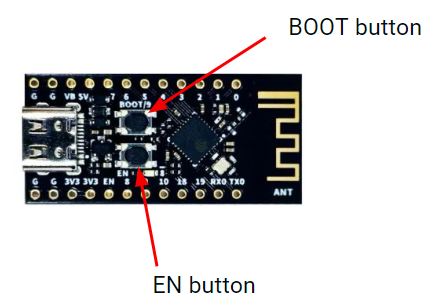
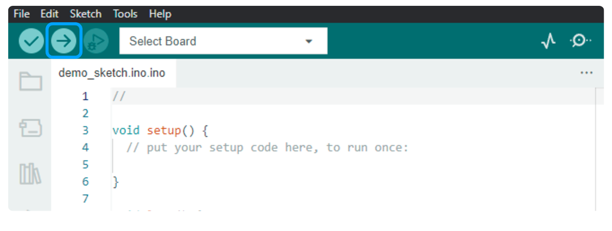

ESP32 Guide
Whether you are starting out or have been frequently programming the ESP32, this ESP32 Guide will be an important resource for steps on how to setup Arduino IDE and program your ESP32 board.
By Sahil Dhaktode &
Gavin Nguyen
ESP32 Overview
The ESP32-C3Fx4 is a board in the OPS project kits that is based on an ESP32 microcontroller.
The ESP32 board has features such as Wi-Fi and Bluetooth capabilities that allow us to build and control cool projects with it!
In OPS, we will now refer to the ESP32-C3Fx4 board as an ESP32 for convenience.
The ESP32 board is depicted here (without its pin headers).
General Purpose Input/Output (GPIO), power, and ground pins run along the sides of the ESP32.
To program the ESP32, we will use the Arduino programming language (a C++ variant) to write and compile sketches.
When you need to read up on Arduino code, refer to the
Arduino Language Reference.
Installing Arduino IDE
We will use the Arduino IDE to write code for our ESP32 board. The software includes a text editor, compiler, debugger, and library manager.
Visit this link to download the installer for Arduino IDE 2.0.0+ . Make sure to select the installer appropriate for your system.

Open the installer and follow its instructions. Easy peasy!
If you want to know more about using the Arduino IDE, check out lecture 3 here.
Setting up ESP32 in Arduino IDE
Once you've installed Arduino IDE, additional steps will be required to properly setup the Arduino IDE envrionment to program ESP32 boards. Follow these steps under "Part 1: Setup" in the video below:
Link to paste into Additional Board Manager URL: https://dl.espressif.com/dl/package_esp32_index.json
Programming the ESP32 with Arduino IDE
Before continuing with the guide, watch "Part 2: Programming" in the video to get an understanding of the programming process:
Guided Steps from the Video
Once you've setup the Arduino IDE environment in "Part 1: Setup", you may plug in your ESP32 into the device that has Arduino IDE installed with a USB-A to USB-C cable from your OPS kit. The correct ESP32 Board (WeAct Studio ESP32C3) must be selected in Arduino IDE. Once you're done with that, you may now start programming in Arduino IDE!
For now, to get you familiarized with the programming process in Arduino IDE, we have provided an example code below that you can copy and paste into your Arduino IDE sketch.
This program blinks the built-in LED connected to pin 8 of the ESP32 on for 1 second and off for 1 second in a continuous loop:
const int LED = 8; //Defines a global integer variable named LED and sets its value to 8.
void setup() {
// put your setup code here, to run once:
pinMode(LED, OUTPUT); //This function configures the pin connected to the built-in LED (in this case, pin 8) to be send an output signal.
}
void loop() {
// put your main code here, to run repeatedly:
digitalWrite(LED, HIGH); //Sets the LED pin (pin 8) to HIGH, meaning it sends power to the LED, turning it on.
delay(1000); //makes the program pause for 1000 milliseconds = 1 second
digitalWrite(LED, LOW); //This line sets the LED pin to LOW, turning off the LED by cutting off power to it.
delay(1000); //makes the program pause for 1000 milliseconds = 1 second
}
When you're finished programming and ready to upload your code to the ESP32, you will need to enter its BOOT mode. You can do so by following the instructions below: 
- Hold down the BOOT button (labeled on the ESP32) for 2 seconds.
- While holding down the BOOT button, press and hold down the EN button (labeled on the ESP32) for 2 seconds.
- Let go of the EN button while still holding the BOOT button for 2 seconds, then let go of the BOOT button.
- You will now be able to upload your code to the ESP32 with Arduino IDE by clicking the arrow button on the top left corner. After it has finished programming, press the EN button once again to run the program on your microcontroller. 
ESP32 Pinout Diagram
 When trying to figure out what pin to use for your specific application/project, refer to the ESP32 Pinout diagram.
When trying to figure out what pin to use for your specific application/project, refer to the ESP32 Pinout diagram.
NC stands for No Connect, and these pins should be left unconnected at all times.
GPIO stands for a General Purpose Input/Output pin and can be used to send or read signals.
The ~ symbol represents pins that are PWM (Pulse Width Modulation) capable.